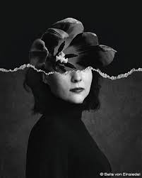
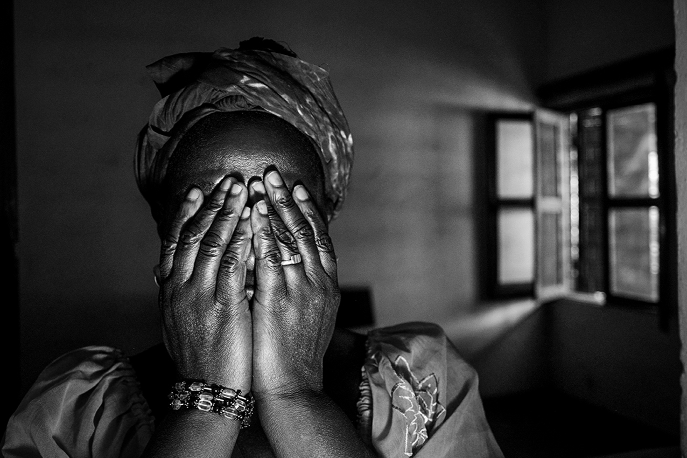
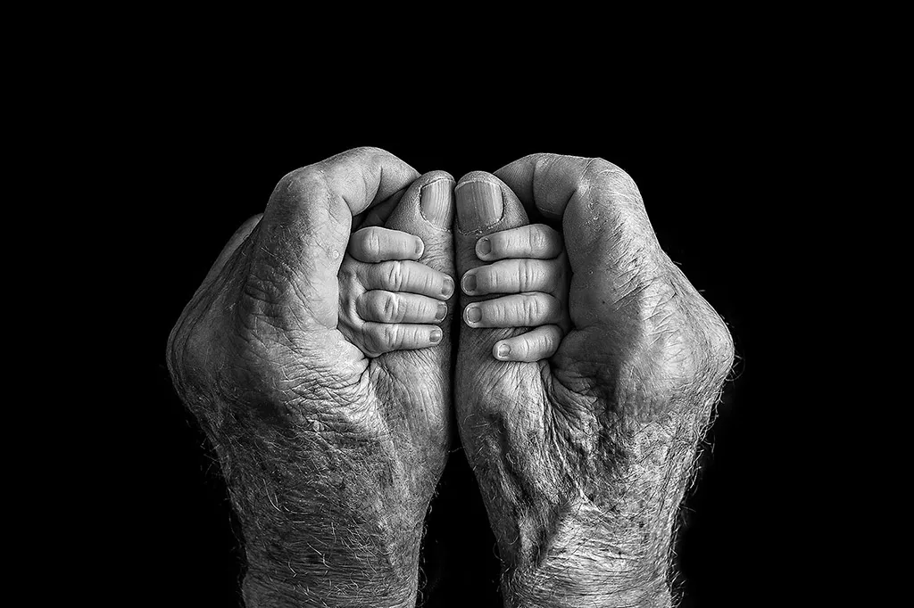

I am a passionate photographer specializing in capturing moments of light and shadow. My work explores the intersection of urban landscapes and personal stories, blending artistic expression with documentary storytelling. Every photograph tells a unique story.
I offer personalized photography services tailored to your unique needs. Whether you are looking for a professional portrait, event coverage, or creative art photography, I am here to bring your vision to life. My commissions include but are not limited to:
If you have a specific project or concept in mind, feel free to contact me for a custom quote and to discuss how we can work together to create something truly unique.
I am always open to connecting with new people and sharing my passion for photography. Feel free to reach out to me if you are interested in my work, have any questions, or just want to say hello. Here are my contact details:
I look forward to hearing from you!
This photograph captures a group of women wearing burkas, with a single figure turned toward the camera. Her eyes, sharp and expressive, draw the viewer in, conveying a sense of individuality and untold stories amidst the collective. The composition speaks to the power of perspective and the depth found in a single glance.
This photograph portrays the ethereal beauty of a mermaid submerged in water, bathed in shimmering light filtering through the surface. The interplay of light and shadows creates a dreamlike scene, evoking a sense of mystery and wonder as if capturing a moment from an underwater fairy tale.
This photograph captures the profound connection between generations. The weathered hands, marked by years of life and experience, gently hold the youthful hands, symbolizing love, guidance, and the passage of wisdom. It’s a powerful reminder of the enduring bond that transcends time.